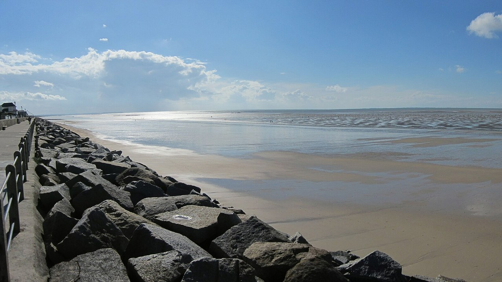

Hauteville-sur-Mer
Manche, France · kitesurf, baignade, paddle

Grande plage plate de la côte des Havres, paradis du char à voile et du kite à marée basse, baignade familiale.
- Lieu
- Manche, France
- Niveau
- Débutant
- Activités
- kitesurf, baignade, paddle
- Type d'eau
- Mer / océan
- Coordonnées
- 48.95, -1.57 (position approximative du secteur)
Dangers à connaître
- Estran immense : marée montante très rapide.
- Vent partagé avec les chars à voile.
Le conseil d'Ocean Buddy
À marée basse l'eau est loin : surveille bien le flot.
Ouvrir dans Ocean Buddy Télécharger sur l'App Store
Source : Description historique Ocean Buddy · vérification externe en attente.